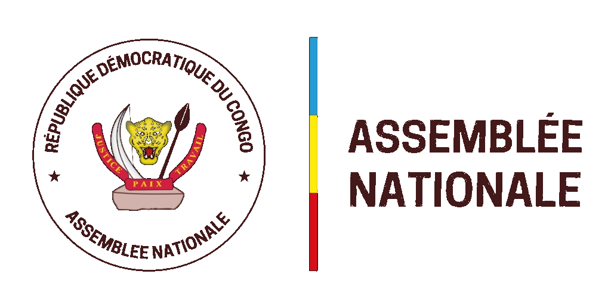
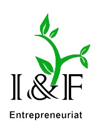

Analyser les dynamiques constitutionnelles
Comprendre les processus de production, de révision et de transformation des Constitutions africaines, et identifier les facteurs de réussite ou d'échec d'un processus constituant.
1ʳᵉ Édition · Journées d'Étude de l'AADP
Repenser l'ordre constitutionnel, garantir la stabilité, refonder l'État de droit.
L'Académie & la 1ʳᵉ Édition
L'Académie Africaine de Droit Public (AADP) réunit universitaires, magistrats, hauts fonctionnaires et responsables publics autour d'une même exigence : doter le continent d'un espace scientifique consacré à la conduite des réformes constitutionnelles. Sa première édition des Journées d'Étude inaugure un rendez-vous appelé à faire référence.
Depuis 2020, l'Afrique connaît une séquence politique et institutionnelle exceptionnelle. Coups d'État, transitions politiques, référendums constitutionnels et débats sur la limitation des mandats témoignent de l'actualité brûlante de la question constitutionnelle. La Constitution demeure un instrument privilégié de transformation de l'État, de régulation des conflits politiques et de recherche de stabilité institutionnelle.
Cette actualité met en lumière le rôle croissant des juridictions constitutionnelles — véritables gardiennes de l'ordre constitutionnel — comme l'ont illustré les crises du Sénégal, du Kenya ou de la République démocratique du Congo. Pourtant, les espaces de formation spécialisés consacrés aux réformes constitutionnelles demeurent rares. Cette première édition entend combler ce manque, en formant une nouvelle génération de décideurs capables de conduire des réformes crédibles, inclusives et adaptées aux réalités africaines.
Objectifs visés
Un programme intensif centré sur les mutations contemporaines du constitutionnalisme africain et sur le renforcement des capacités de celles et ceux appelés à concevoir, conduire ou accompagner les réformes institutionnelles.
Comprendre les processus de production, de révision et de transformation des Constitutions africaines, et identifier les facteurs de réussite ou d'échec d'un processus constituant.
Approfondir la compréhension des enjeux liés aux processus électoraux, à la stabilité institutionnelle et à la consolidation de l'État de droit sur le continent.
Examiner le rôle des juridictions constitutionnelles dans la régulation des rapports de pouvoir et la protection des normes constitutionnelles.
Favoriser une meilleure compréhension des interactions entre les Constitutions africaines, le droit international et les normes régionales de l'Union africaine.
Renforcer les capacités des jeunes chercheurs, hauts fonctionnaires et responsables publics, et contribuer à former des décideurs capables de mettre en œuvre des réformes adaptées.
Encourager une culture de gouvernance constitutionnelle fondée sur la responsabilité publique, l'éthique institutionnelle, la stabilité des institutions et le respect des principes démocratiques.
Axes scientifiques
Chaque axe articule une problématique générale et une série de sous-thèmes. Cliquez pour découvrir le détail des travaux.
Programme détaillé
Articulé autour des étapes Comprendre · Comparer · Réformer · Négocier · Proposer, le programme combine approches théoriques et exercices pratiques, de l'analyse des dynamiques constitutionnelles à la formulation de propositions concrètes de réforme.
Cérémonie d'ouverture
Autorités envisagées : Président de l'Assemblée nationale, Première Ministre, Président de la Cour constitutionnelle.
Trente ans de réformes constitutionnelles en Afrique : bilan et perspectives
Pr. Abdoulaye Soma
Les réformes constitutionnelles en Afrique : entre succès et échec
Pr. Oumarou Narey
Cartographie des réformes constitutionnelles africaines depuis 1990
Pr. Evariste Boshab
Atelier sur les réformes constitutionnelles — Études de cas : Côte d'Ivoire, Congo-Brazzaville, RCA, Togo
Groupes dirigés par Pr. Marcel Wetsh'Okonda (Université de Kinshasa), Pr. Trésor Makunya (Université de Prétoria), Me Chancel Funga (Université Côte d'Azur, Nice), Dr. Élysée Hator (Université Paris-Saclay)
La légistique constitutionnelle : écriture de la norme constitutionnelle
Pr. Pierre de Montalivet (Université Paris-Est Créteil)
Le portrait des réformes constitutionnelles en Afrique : révision et changement de Constitution
Dr. Guelord LUEMA (Université Paris-Est Créteil · Président et fondateur de l'Académie)
Alternance politique et limitation des mandats présidentiels : regard croisé
Pr. Jean-Pierre Camby (Université Paris-Saclay), Dr. Amadou IMERANE (Université de Niamey · Direction de l'Académie), M. David Aloco (Université de Bordeaux)
Réformes électorales et gouvernance démocratique
Dr. Gilles Badet (Université d'Abomey-Calavi), Me Ronsard Malonda (Direction de l'Académie · contentieux électoral)
Transitions constitutionnelles en Afrique contemporaine : regard croisé
Pr. Jean-Louis Esambo (Université de Kinshasa), Pr. Éric Ngango (Université de Douala)
L'encadrement des réformes constitutionnelles par le droit de l'Union africaine · Organisations régionales face aux changements anticonstitutionnels
Pr. Blaise Tchikaya, Président de la Cour africaine des droits de l'homme et des peuples ; Pr. Kazadi Mpiana (Université Nouveaux Horizons)
Les coups d'État militaires : Mali, Burkina Faso, Niger, Gabon, Tchad
Groupes dirigés par Dr. Isaac Muzigwa (Université de Toulon), Dr. Puis D'joli (Université Paris 13), M. Jonas Tshibayi Ntumba (Université de Strasbourg)
Note stratégique : restaurer l'ordre constitutionnel et élaboration de la Charte de transition
Groupes dirigés par Pr. Oumarou Narey, Pr. Kazadi Mpiana (Université Nouveaux Horizons), Dr. Amadou IMERANE (Université de Niamey)
Rôle du juge constitutionnel dans les réformes constitutionnelles
Pr. Dieudonné Kaluba
L'humanisation des réformes constitutionnelles internes devant les organes africains des droits de l'homme
Pr. Trésor Makunya (Université de Prétoria)
Ingénierie constitutionnelle : référendum, commissions, rédaction du texte constitutionnel
Pr. Jacques D'joli
La légistique constitutionnelle en RDC : l'écriture de la norme constitutionnelle en RDC
Pr. François Bokona
Les nouveaux défis du constitutionnalisme en Afrique — Les réformes constitutionnelles à l'ère du numérique : intelligence artificielle, souveraineté numérique et protection des droits fondamentaux en Afrique
Pr. Sébastien Lath, M. Brozeck Kandolo
Processus de réforme constitutionnelle : diagnostic, propositions, opportunité et stratégie de mise en œuvre
Dirigé par Pr. Ngondankoy (Université de Kinshasa), Dr. Gilles Badet (Université d'Abomey-Calavi)
Élaboration du projet de réforme de la Constitution : exposé des motifs et compromis politique
Dirigé par Pr. François Bokona (Université de Kinshasa), Pr. Telesphore ONDO (Université Omar Bongo)
Présentation des projets élaborés : nouvelle Constitution · Charte constitutionnelle de transition
M. Jonas Tshibayi Ntumba (Université de Strasbourg), Dr. Amadou IMERANE (Université de Niamey)
Évaluation des projets : légitimité, respect des valeurs démocratiques, garantie des droits fondamentaux et respect des principes de l'État de droit
Jury : Pr. Jean-Louis Esambo, Pr. François Bokona, Pr. Sébastien Lath, Pr. Abdoulaye Soma, Dr. Wasenda (Ancien juge constitutionnel de la RDC)
Rapport de synthèse, remise des certificats et mot de clôture
Rapport de synthèse par Pr. Oumarou Narey (Université de Niamey)
Intervenants
Une réunion exceptionnelle de professeurs, présidents de juridiction et experts venus de tout le continent et des grandes universités partenaires. Cliquez sur une fiche pour la biographie détaillée.
Et de nombreux autres universitaires et praticiens réunis dans les séminaires, masterclass et ateliers du programme.
Public cible
Ce programme s'adresse à un public diversifié, avec une attention particulière portée aux futurs décideurs et aux acteurs impliqués dans les processus de réforme.
Doctorants, jeunes docteurs et étudiants en droit, science politique, relations internationales et disciplines connexes.
Enseignants-chercheurs travaillant sur les questions constitutionnelles, institutionnelles et électorales africaines.
Magistrats, membres des juridictions constitutionnelles et personnels des administrations publiques.
Parlementaires, collaborateurs parlementaires, membres des commissions électorales et cadres des institutions de gouvernance.
Hauts fonctionnaires, conseillers juridiques des administrations et responsables de l'élaboration des politiques publiques.
Membres des cabinets présidentiels, gouvernementaux ou parlementaires participant aux processus de réforme institutionnelle.
Jeunes leaders, responsables politiques et acteurs publics appelés à exercer des fonctions de décision ou d'encadrement institutionnel.
Responsables d'organisations régionales africaines, internationales et de la société civile actives dans la démocratie et l'État de droit.
Méthodes pédagogiques
Conférences magistrales et masterclass animées par des universitaires et praticiens.
Analyse d'expériences constitutionnelles africaines et ateliers de rédaction constitutionnelle.
Tables rondes réunissant chercheurs, magistrats, responsables publics et organisations internationales.
Inscription
Complétez le formulaire pour manifester votre intérêt. Notre secrétariat scientifique reviendra vers vous avec les modalités de participation et le dossier d'inscription.
Questions fréquentes
Le programme s'adresse aux doctorants et étudiants avancés, enseignants-chercheurs, magistrats et membres des juridictions constitutionnelles, parlementaires, hauts fonctionnaires, responsables politiques ainsi qu'aux représentants d'organisations régionales et internationales. L'ambition est de créer un espace de dialogue entre le monde académique et les praticiens des institutions publiques.
Il suffit de compléter le formulaire d'inscription en ligne de cette page. Notre secrétariat scientifique vous adressera ensuite le dossier de participation, les modalités pratiques et la confirmation de votre place.
Oui. Un certificat de participation est remis aux participants à l'issue des cinq journées, lors de la cérémonie de clôture, après présentation et évaluation des projets élaborés en atelier.
Les modalités financières et les éventuelles possibilités de prise en charge sont précisées dans le dossier d'inscription transmis après réception de votre demande. N'hésitez pas à contacter le secrétariat pour toute question spécifique.
Les Journées d'Étude se tiennent au Fleuve Congo Hôtel, à Kinshasa (République démocratique du Congo). Les informations relatives à l'accès, à l'hébergement et aux facilités logistiques sont communiquées aux participants confirmés.
Avec le concours de


Kinshasa · Septembre 2026
Rejoignez universitaires, magistrats et décideurs pour repenser l'ordre constitutionnel africain.